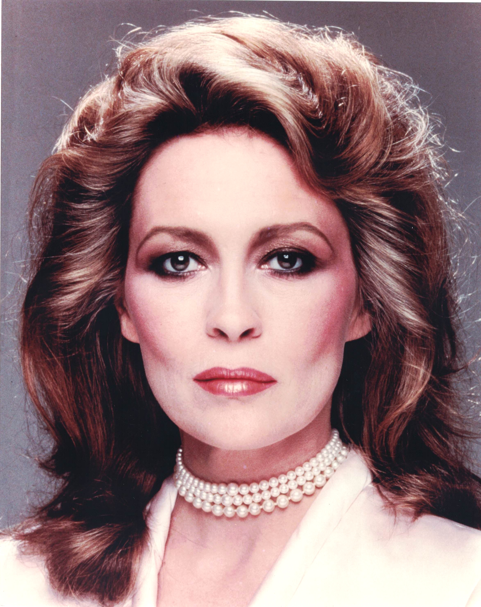

Product No. HEC-0050
$12.99
Shipping: $8.95
Description
8x10 color photograph
Full Description
Faye Dunaway is an American actress known for her intense screen presence and performances in some of the most acclaimed films of the 1960s and 1970s. Born Dorothy Faye Dunaway on January 14, 1941, in Bascom, Florida, she studied acting before beginning her career on the stage and in television. Dunaway became an international star as bank robber Bonnie Parker in "Bonnie and Clyde" (1967), opposite Warren Beatty. The film became a landmark of American cinema and earned Dunaway her first Academy Award nomination for Best Actress. She went on to star in major films including "The Thomas Crown Affair," "Little Big Man," "The Three Musketeers," "Chinatown," "The Towering Inferno," and "Three Days of the Condor." Her performance as television executive Diana Christensen in "Network" (1976) won her the Academy Award for Best Actress. Dunaway also portrayed actress Joan Crawford in "Mommie Dearest" (1981), a controversial film that later developed a strong cult following. Her other work has included television productions, stage appearances, and international films. Over the course of her career, Faye Dunaway has received numerous awards and nominations and has been recognized as one of the defining actresses of the New Hollywood era. Her roles in "Bonnie and Clyde," "Chinatown," and "Network" remain especially celebrated, making her photographs, signed memorabilia, and autographs popular with collectors of classic and modern Hollywood.
Condition
Good condition - Slight crease at far left border of photo